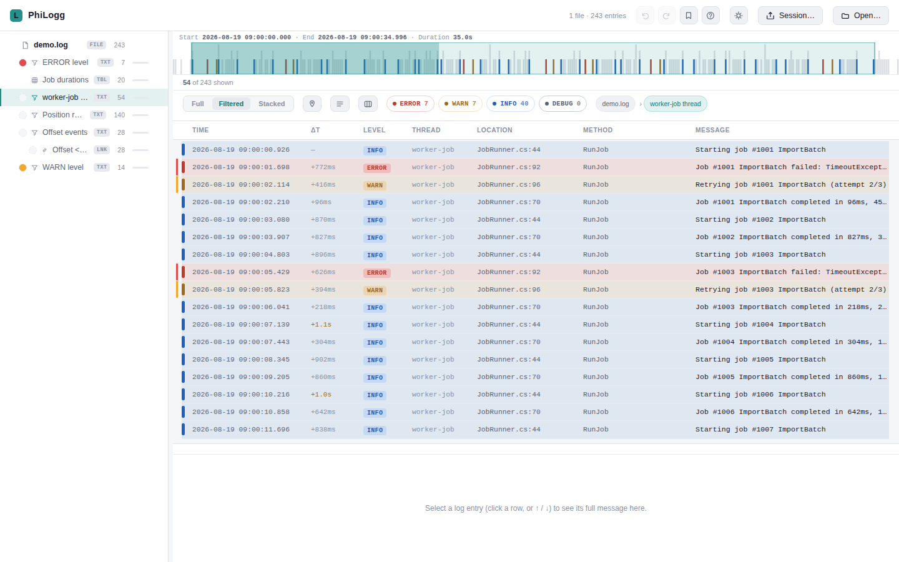
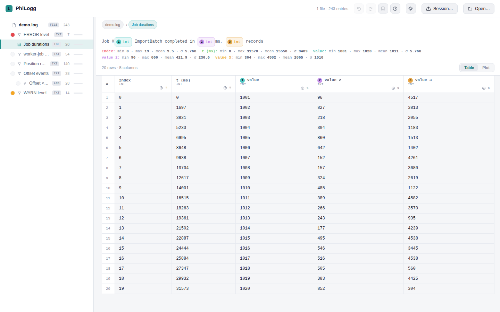
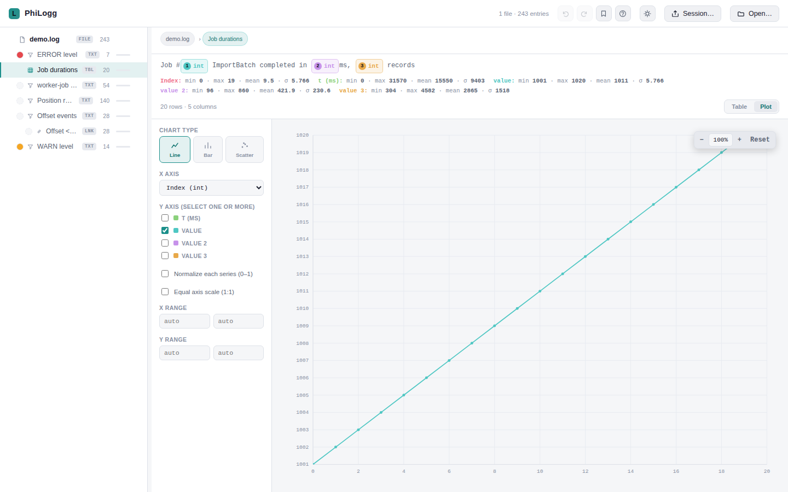
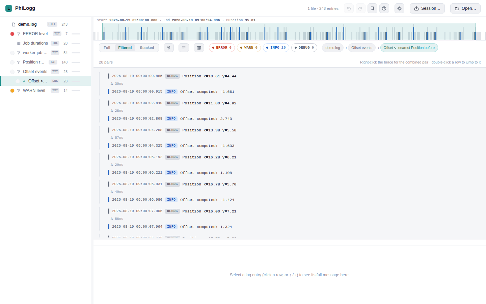
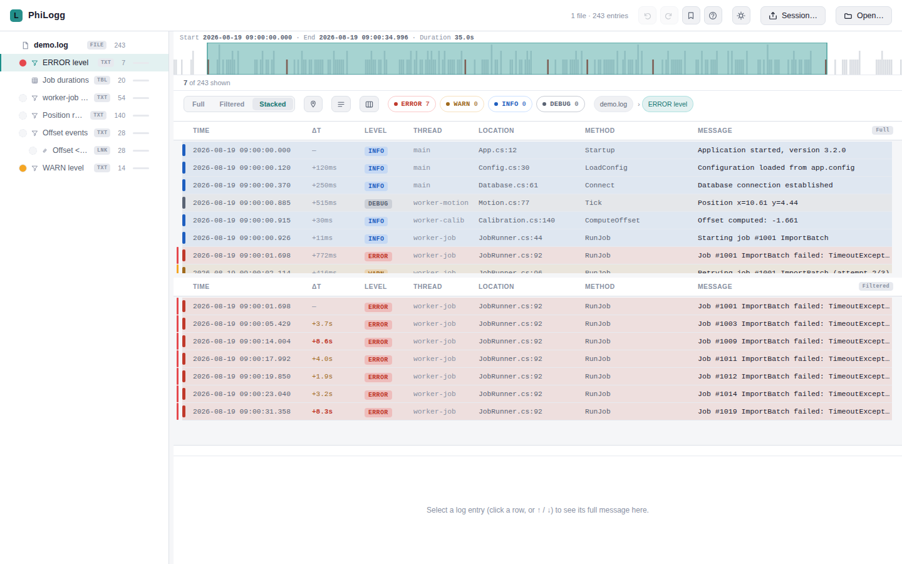
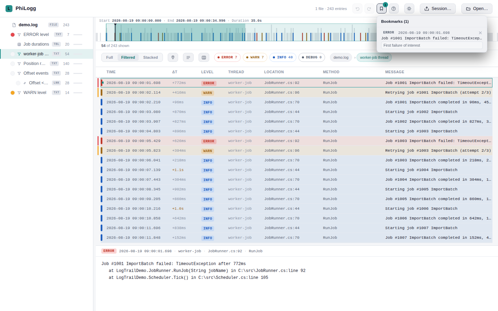
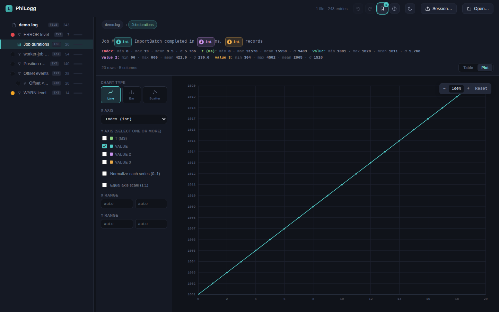

Logs lesen kostet Zeit. PhiLogg gibt sie dir zurück.
Ein einziges HTML-File. Kein Server, keine Installation, kein Upload. Filterketten statt Ctrl+F, Wertextraktion statt Copy-Paste in Excel, Plots statt Kopfrechnen — gebaut, um genau die Fragen zu beantworten, die beim Debuggen und bei der Verifikation wirklich auftauchen.

Gebaut als Ersatz für LogViewPlus & Co. — für ein ganz bestimmtes Log-Format
Kein SaaS, kein Agent, kein Log-Shipping. PhiLogg öffnet die Datei, die schon auf deiner Platte liegt, und bleibt dabei komplett im Browser. Genau das macht es für Bug-Analyse und Verifikations-Läufe während der Entwicklung so schnell einsatzbereit.
Sofort startklar
Doppelklick auf philogg.html — fertig. Kein npm install, kein Server, kein Setup für die Kollegin nebenan.
Daten bleiben lokal
Logs verlassen nie den Rechner. Kein Upload, kein Tracking, keine Cloud-Abhängigkeit — auch bei sensiblen Kundenlogs unbedenklich.
Bleibt schnell bei großen Files
Asynchrones Parsing in Chunks und virtualisiertes Rendering halten die UI auch bei sehr großen Logdateien flüssig.
Die Features, die den Unterschied machen
Ein typischer Debugging-Flow: filtern, verknüpfen, Werte extrahieren, plotten — alles im selben Fenster, ohne das Tool zu wechseln.
Verschachtelte Filterketten statt Wegwerf-Suchen
Jeder Filter arbeitet auf dem Ergebnis seines Elternfilters. So baust du dir Schritt für Schritt den genauen Blick auf das Problem auf — und jeder Schritt bleibt als Baumknoten sichtbar, benennbar, umfärbbar und wiederverwendbar.
- Text-, Zeitraum-, AND/OR-, Link- und Kontext-Filter, beliebig kombinierbar
- Groß-/Kleinschreibung, Spaltenbeschränkung und NOT/Invertierung pro Textfilter
- Undo/Redo, Copy/Paste und Drag & Drop direkt im Baum
- Breadcrumb + Level-Schnellfilter immer sichtbar, ein Klick zurück zu jedem Vorfahren
Aus Log-Text werden Zahlen — und aus Zahlen ein Chart
Ein Muster wie Job #[value:int] completed in [value:int]ms reicht, und PhiLogg
baut daraus eine sortierbare Tabelle mit typisierten Spalten, Min/Max/Mittelwert/σ
pro Spalte und einem Plot-Tab — ganz ohne externe Chart-Bibliothek.
- Platzhalter für float/int/hex/word/time, live Muster-Vorschau während der Eingabe
- Line-, Bar- und Scatter-Charts, mehrere Y-Serien, Farbe nach Wert
- Wert-Assertions (Soll-Bereich oder Ziel±Toleranz) mit Pass/Fail-Markierung
- Copy als TSV — direkt einfügbar in Excel oder ein Ticket

Trends erkennen, ohne die Zahlen erst nach Excel zu schaufeln
Der Plot-Tab sitzt direkt neben der Extraktionstabelle und teilt sich ihre Daten — Achsenwahl, Zoom und Serienauswahl reagieren live, jede Spalte lässt sich per Klick zur X- oder Y-Achse machen.
- Automatische Achsenwahl, jederzeit manuell überschreibbar
- Zoom/Reset, normierte Serien, gleichskalierte Achsen für 1:1-Vergleiche
- Klick auf einen Punkt springt zurück zur zugehörigen Log-Zeile

Zwei Ereignisströme zueinander in Beziehung setzen
Klassische Frage bei der Verifikation: "Was war der letzte Sensorwert vor diesem Event?" Der Link-Filter pairt zwei Filterergebnisse per Nearest-Neighbor-Suche — inklusive mehrstufiger Verkettung für Multi-Hop-Analysen.
- Vorwärts/rückwärts, N-tes Vorkommen, optional exklusiv oder chronologisch erzwungen
- Mehrstufige Verkettung über einen Dialog (2 oder mehr Filter in einem Zug)
- Δ-Zeit zwischen den gepaarten Zeilen direkt sichtbar

Den Überblick behalten, während du in die Tiefe filterst
Die "Full"-Ansicht zeigt immer die komplette Datei, unabhängig vom aktiven Filter — mit frei einfärbbaren Highlight-Regeln pro Filterknoten. So verlierst du nie den Gesamtkontext, während "Filtered" auf das aktuelle Problem eingeengt bleibt.
- Beliebig viele Farbregeln, gleichzeitig sichtbar als Streifen am Zeilenrand
- Tabs- oder Stacked-Layout, frei einstellbare Aufteilung
- Auswahl bleibt zwischen beiden Ansichten synchron, kein "Sprung" beim Wechseln

Wichtige Fundstellen markieren, nicht nur merken
Ein Klick setzt ein Bookmark mit Notiz — praktisch, um während einer längeren Analyse-Session Fundstellen festzuhalten, auf die man später zurückkommen will, ganz ohne die Filterkette zu verlassen.
- Bookmarks mit Freitext-Notiz, jederzeit über das Panel erreichbar
- Optional direkt in die gefilterte Ansicht "eingepinnt"
- Detailpanel zeigt die volle Nachricht inkl. Stacktrace mit erhaltenen Zeilenumbrüchen

Passt sich an, statt dich zu blenden
Light und Dark Theme, folgt standardmäßig der Systemeinstellung und lässt sich jederzeit per Klick umschalten — für lange Debugging-Sessions genauso geeignet wie für den schnellen Blick zwischendurch.

Alle Features im Detail
Eine möglichst vollständige Liste dessen, was heute schon in PhiLogg steckt.
Dateien & Datenaufnahme
- Single-File-Tool, läuft per Doppelklick oder von jedem Webserver
- Toleranter Parser für
%d %p "%t" %l [%method] %m%n-Logformat inkl. Mehrzeilen-Stacktraces - Asynchrones Chunk-Parsing mit Fortschrittsbalken direkt an der Datei-Zeile
- Drag & Drop von Dateien und ganzen Ordnern
- Mehrere Dateien zu einer chronologischen Zeitleiste zusammenführen (Merge)
- Ordner-Watch mit Lazy Loading für große Verzeichnisse
- Live-Tailing wachsender Logdateien
Filtern & Verknüpfen
- Beliebig tief verschachtelbarer Filterbaum, jeder Filter auf dem Ergebnis seines Vorgängers
- Textfilter mit Case-Sensitivity und Spaltenbeschränkung (Zeit/Level/Thread/Ort/Methode/Message)
- Zeitraum-Filter inkl. Drag-Select auf der Timeline-Minimap und manuellem Dialog
- AND/OR-Verknüpfung mehrerer Filter
- Link-Filter: Nearest-Neighbor-Pairing, N-tes Vorkommen, exklusiv/chronologisch erzwingbar
- Mehrstufige Link-Ketten (Multi-Hop) über einen dedizierten Dialog
- Time-Context-Filter: Zeitfenster um Referenz-Ereignisse
- Invertierung (NOT) für jeden geeigneten Filtertyp
- Filterknoten umbenennen, farbig markieren, kopieren/ausschneiden/einfügen, per Drag & Drop umsortieren
Wertextraktion & Auswertung
- Muster-Sprache mit typisierten Platzhaltern: float, int, time, hex, word, Wildcard
- Live-Musterschau mit farblich markierten Treffern während der Eingabe
- Ignorierbare Platzhalter, die nur zum Verankern des Musters dienen
- Sortierbare Extraktionstabelle mit synthetischen Index- und t(ms)-Spalten
- Spaltenstatistiken (Min/Max/Mittelwert/Standardabweichung)
- Wert-Assertions: Bereichs- oder Soll±Toleranz-Prüfung mit visuellem Pass/Fail
- Plot-Tab: Line/Bar/Scatter-Charts, Mehrfachserien, Farbe-nach-Wert, Zoom
- Zellauswahl (auch nicht-zusammenhängend) und Copy als TSV
Ansicht & Navigation
- Full/Filtered-Split mit frei einfärbbaren Highlight-Regeln über die ganze Datei
- Tabs- oder Stacked-Layout, frei einstellbare Panel-Größen
- Virtualisiertes Rendering für Log-Tabelle, Extraktionstabelle und Link-Ansicht
- Timeline-Minimap mit Dichteanzeige, Klick-Navigation und Drag-Select
- Automatisches Scroll-Anchoring: aktive Zeile bleibt beim Filtern/Wechseln sichtbar
- Mehrzeilige Nachrichtendarstellung für vollständige Stacktraces
- Spaltensichtbarkeit und -breite frei konfigurierbar
- Mehrfachauswahl (Ctrl/Shift-Klick) und Copy als Rohtext, chronologisch sortiert
- Level-Schnellfilter, Breadcrumb mit Klick-Navigation zu jedem Vorfahren
Workflow & Persistenz
- Undo/Redo für strukturelle Baumänderungen
- Bookmarks mit Freitext-Notiz, optional in die gefilterte Ansicht eingepinnt
- Automatischer Session-Cache — Browser-Reload verliert keine Arbeit
- Pro Datei gespeicherter Filterverlauf über Sessions hinweg
- Filter als JSON speichern/laden
- Wiederverwendbare Filter-Bibliothek, dateiunabhängig anwendbar
- Kompletter Session-Export/-Import zum Teilen einer Analyse mit Kolleg:innen
- Intelligentes Datei-Matching beim Import (Name, Größe, Inhalt)
Bedienung & Qualität
- Umfangreiche Tastatur-Shortcuts (Filtern, Kopieren, Navigieren, Bookmarks)
- Light- und Dark-Theme, folgt der Systemeinstellung
- Kontextmenüs für schnellen Zugriff auf alle Zeilen-/Knoten-Aktionen
- Keine Installation, keine Cloud, keine Telemetrie — alles lokal im Browser
- Keine externen Abhängigkeiten, kein Build-Schritt, kein Framework
- Begleitet von einer automatisierten Regressionstest-Suite
Kein Deployment-Ritual — Öffnen reicht
PhiLogg ist absichtlich eine HTML-Datei: inline CSS, vanilla JavaScript, kein Framework, kein Build-Tooling, keine CDN-Aufrufe. Das macht es so einfach, es an Kolleg:innen weiterzugeben wie jede andere Datei auch.
Gebaut, um ein bestimmtes, log4net-artiges Pipe/Tab-getrenntes Format zu lesen —
genau das Format, das in diesem Projekt anfällt. Läuft direkt via file://
oder von jedem statischen Webserver, ganz ohne Backend.
Nächstes Bug-Log direkt in PhiLogg öffnen
Keine Anmeldung, kein Setup — die Datei liegt schon im Projekt.
philogg.html öffnen →